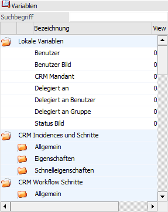

Variablenbereich "Lokale Variablen"
Lokale Variablen

Wenn eine Liste für den Datenbereich "CRM" (Listentyp "16 - CRM Workflows", "17 - CRM Aktionen" oder "18 - CRM Workflows und Aktionen") oder "PDMS" (Listentyp "26 - PDMS") erstellt wird, dann stehen weitere Variablen über den Variablenbereich "Lokale Variablen" zur Verfügung.
Ø Benutzer
Diese Variable kann statt der Variable 170/24 (Benutzer, welcher den Schritt geschrieben hat) verwendet werden. Damit wird der Benutzername angedruckt.
Ø Benutzer Bild
Mit dieser Variable kann das Bild des Benutzers (sofern in der Benutzeranlage hinterlegt) angedruckt werden.
Ø CRM Mandant
Wenn mehrere Mandanten auf ein WinLine CRM zugreifen (mandantenübergreifendes CRM), dann kann mit Hilfe dieser Variable die jeweilige Mandantennummer (d.h. die Herkunft der Aktion oder des Falls) angedruckt / ausgegeben werden.
Ø Delegiert an / Delegiert an Benutzer / Delegiert an Gruppe
Diese Variablen können statt der Variablen 170/24 (Benutzer, welcher den Schritt geschrieben hat), der Variable 170/21 (Delegiert an Benutzer) und Variable 170/22 (Delegiert an Gruppe) verwendet werden (weil in den Variablen 170/21, 170/22 bzw. 170/24 nur Nummern gespeichert sind). Mit diesen Variablen kann dann der Benutzername bzw. die Benutzergruppe selbst angezeigt werden, welche(r) für den CRM-Eintrag zuständig ist.
Ø Status Bild
Mit Hilfe der Variable "Status Bild" kann in den Auswertungsarten "Ausgabe Bildschirm", "Ausgabe Drucker" und "Ausgabe Tabelle" der Status des CRM-Eintrages (170/34) als Bild angezeigt bzw. angedruckt werden:
ü Status 0
=  - rote Kugel
- rote Kugel
ü Status 100
= -
grüne Kugel
ü Weitere Stati =
- gelbe Kugel
Weitere CRM-Variablen
Wenn aus dem Bereich CRM-Workflow Schritte die Variable "Icon" angedruckt wird (Var 171/005), dann wird nicht der Inhalt der Variable selbst, sondern die Grafik dazu angezeigt.